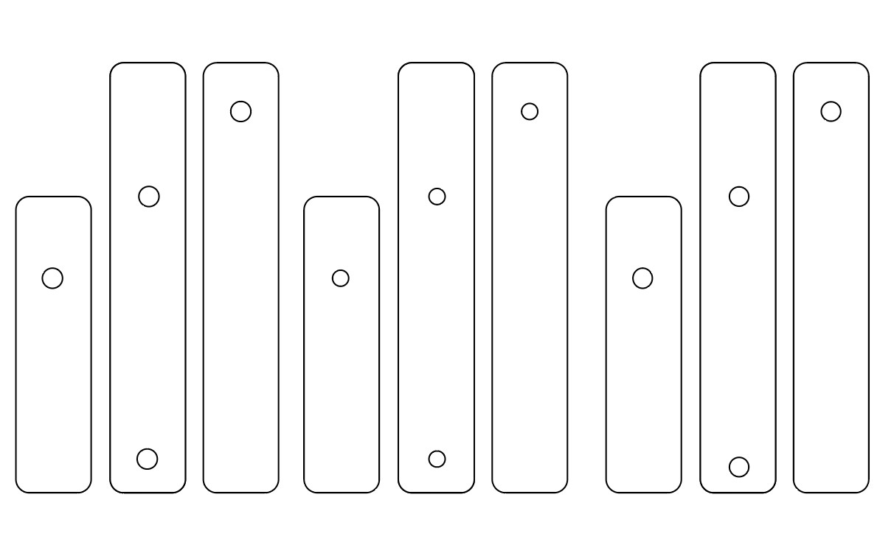

Assignment 4: Piston Linkage

For this assignment, I created a simple piston with 3 parts & 2 fastners.
Source Files
Inspired by
BirdBrain Technologies - Piston Basic Mechanism
Printer settings
Laser Printing settings: 100% power, 20% speed, 50% freq.I browsed many CAM designs, & basic mechanisms. In the end, I decided to go with a simple piston design.
Prototype
I first created created a cardboard prototype by cutting out the 3 rectangles and added holes for the fastner.
AI & OnShape
I decided to create the files on AI and then imported it to OnShape in DXF format

I had a hard time manipulating the imported file on OnShape, to extrude it. Finally, I was able to troubleshoot it. I used the AI file to laser cut

Final Output
Issues encountered & lessons learnt
If I was to do this again, I would start with OnShape. Since I was somewhat more famililar with AI vs. OnShape, I ended up going down the export/import route. While OnShape seems simpler than Rhino, I didn't find it super intuitive to use.
Peer Attributions
Thank you BirdBrain Technologies for the design inspiration.
Thank you Christa Keizer for your help with laser cutting the shapes + helping with the OnShape motion & fastners.
Thank you Andrew Waer for your help with troubleshooting the AI to OnShape file import workflow.